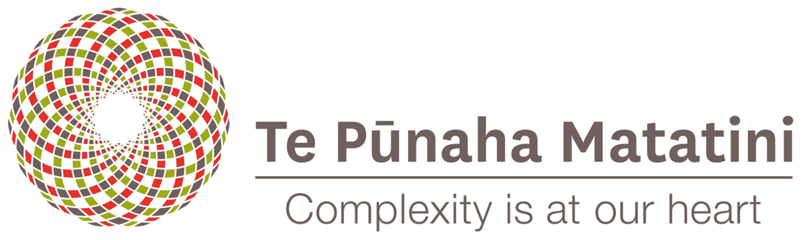

NetSciX 2026
International School and Conference on Network Science17th-20th February 2026Auckland, New Zealand
Keynote speakers & programme at a glance
School headline speaker
| Professor Eduardo Altmann (University of Sydney) | ||
Programme at a glance (tentative)
| Tuesday 17 | Wednesday 18 | Thursday 19 | Friday 20 | ||||
|---|---|---|---|---|---|---|---|
| 08:00:00 | Registration open | Registration open | Registration open | Registration open | |||
| 9:00-10:15 | Meso-scale organization of networks: theory and applications (1/2) – Eduardo Altman | 9:00-10:00 | Keynote 1: Tina Eliassi-Rad | 9:00-10:00 | Keynote 3: Rio Sun | 9:00-10:00 | Coffee and networking morning |
| 10:15-10:45 | Coffee break | 10:00-10:30 | Coffee break | 10:00-10:30 | Coffee break | 10:00-11:00 | Keynote 5: Clare Postlethwaite |
| 10:45-12:00 | Meso-scale organization of networks: theory and applications (2/2) – Eduardo Altman | 10:30-12:00 | Presentation Session | 10:30-12:00 | Parallel thematic session | 11:00-12:00 | Presentation Session |
| Discrete network models in biology | |||||||
| Thematic session: Networks in Science of Science | |||||||
| 12:00-1:15 | Lunch | 12:00-1:15 | Lunch | 12:00-1:15 | Lunch | 12:00-1:15 | Lunch |
| 1:15-2:30 | Ecological Networks: from data reconstruction to dynamical insights – Kate Wootton and Anshuman Swain | 1:15-2:15 | Keynote 2: Lewis Mitchell | 1:15-2:45 | Parallel thematic session | 1:15-2:45 | Presentation Session |
| Algorithmic Fairness in Network Science | |||||||
| The scales of Movement | |||||||
| 2:30-3:45 | Gentle Introduction to Deep Graph Learning for Network Scientists – Ingo Sholtes | 2:15-3:45 | Presentation Session | 2:45-3:45 | Keynote 4: Yukie Sano | ||
| 3:45-4:15 | Coffee break | 3:45-4:15 | Coffee break | 3:45-4:15 | Coffee break | 2:45-3:15 | Coffee break |
| 4:15-5:30 | Indigenous Data Sovereignty – Daniel Wilson | 4:15-5:30 | Spotlight Talks | 4:15-5:30 | Lightning Talks | 3:15-3:30 | Closing |
| 5:30-late | Mihi whakatau - official conference welcome for all attendees by mana whenua NetPlace Panel Welcome reception |
5:30-7:30 | Poster session and reception | 7:00-late | Conference dinner |
Registration & Location
| Registration Type | Standard |
|---|---|
| Academic full registration | NZ$990 |
| Non-academic full registration | NZ$1,150 |
| Student registration | NZ$600 |
The conference will be held at the Sir Owen G Glenn Building at the University of Auckland (12 Grafton Road, Auckland 1010).


Accommodation
We have secured discounts with a number of accommodation options. Please use the booking code NSX2026 for these.
Accor Meetings & Events - Copthorne Auckland City - Grand Millennium Auckland - M Social Auckland
Organising committee
Hosted by

About Auckland
Auckland, officially known as Tāmaki Makaurau in Māori, is the largest city in New Zealand and serves as a hub of culture, business, and innovation. Situated on the North Island, Auckland is nestled between two harbors, the Waitematā and Manukau, with the Pacific Ocean to the east and the Tasman Sea to the west.
As New Zealand's most populous urban area, Auckland is home to over 1.6 million people, representing a variety of ethnicities and cultures. Auckland's skyline is adorned with a blend of modern skyscrapers and historic buildings, showcasing its rich architectural heritage. The city's vibrant cultural scene is evident in its numerous museums, art galleries, theaters, and music venues, offering a diverse range of experiences.
With its temperate climate, stunning natural landscapes, and abundance of outdoor activities, Auckland is a paradise for nature enthusiasts and adventure seekers. From exploring volcanic cones and lush rainforests to enjoying water sports and sailing in the harbors, there is no shortage of opportunities to connect with the great outdoors in Auckland. For many visitors Auckland is also the starting point for a once-in-a-lifetime trip that takes them from the top of Aotearoa New Zealand’s North Island through to the bottom of the South Island.